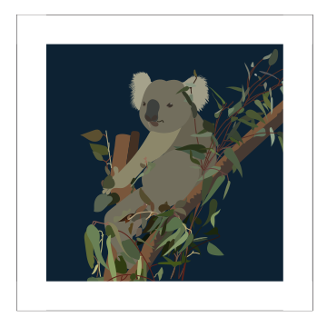

Australia, a land of vast landscapes and vibrant cities, offers an irresistible blend of natural beauty, cultural richness, and urban sophistication. Cairns, situated in tropical North Queensland, is renowned as the gateway to the spectacular Great Barrier Reef, inviting visitors to explore its underwater wonders and lush rainforests teeming with exotic wildlife. Meanwhile, Sydney stands as a beacon of cosmopolitan charm, with its iconic landmarks such as the Sydney Opera House and Harbor Bridge framing the stunning harbor. Visitors to these cities will be captivated by Cairns' unparalleled reef experiences and Sydney's dynamic blend of culture, cuisine, and coastal lifestyle, ensuring unforgettable memories and a deep appreciation for Australia's diverse offerings.
Top Sites from Down Under
-
Great Barrier Reef

The world's largest coral reef system, offering unparalleled opportunities for snorkeling, diving, and marine exploration amidst stunning coral formations and diverse marine life.
-
Daintree Rainforest

As one of the oldest rainforests on Earth, the Daintree Rainforest offers a captivating blend of biodiversity and ancient landscapes. Visitors immerse themselves in its lush foliage on guided walks, river cruises, or zip-line adventures.
-
Sydney Opera House

An iconic architectural marvel and UNESCO World Heritage Site, offering guided tours, world-class performances, and unparalleled views of Sydney Harbour.
-
Sydney Harbor Bridge

Affectionately known as the "Coathanger," this historic bridge offers visitors the opportunity to climb to its summit for panoramic views of the city skyline and harbour.
-
Taronga Zoo
Home to over 4,000 animals from around the world, including iconic Australian wildlife such as kangaroos and koalas, as well as exotic species like elephants, giraffes, and tigers.
Local Lifelines
Aboriginal Culture
The Aboriginal peoples of Australia, believed to have inhabited the continent for over 65,000 years, boast one of the world's oldest continuous cultures. With diverse languages, traditions, and spiritual beliefs, Aboriginal culture is deeply rooted in connection to the land, known as "Country," and encompasses a rich oral tradition of storytelling, art, and ceremony. Central to Aboriginal spirituality is the Dreamtime, a sacred period when ancestral beings created the world and its inhabitants, shaping the landscape and imbuing it with significance. This profound connection to Country informs every aspect of Aboriginal life, from hunting and gathering practices to social structures and kinship systems. Despite facing significant challenges throughout history, including colonization, dispossession, and discrimination, Aboriginal peoples continue to preserve and celebrate their culture, fostering resilience, pride, and a deep sense of identity within Australia's diverse cultural tapestry.